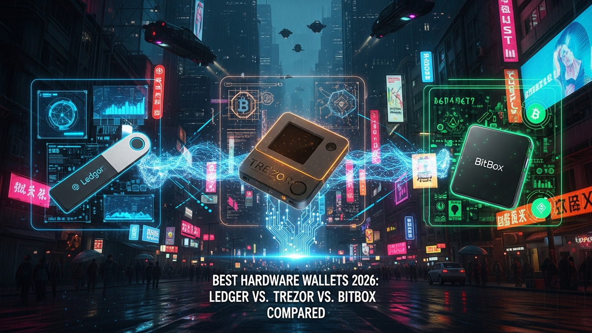

The digital asset landscape in 2026 is a dynamic, ever-evolving frontier, marked by unprecedented innovation alongside increasingly sophisticated threats. As cryptocurrencies, NFTs, and decentralized finance (DeFi) protocols become more integrated into mainstream financial systems and daily life, the imperative for robust self-custody solutions has never been more pronounced. Gone are the days when a simple software wallet or exchange-held funds sufficed for serious investors. Today, safeguarding your digital wealth against state-sponsored hackers, advanced phishing campaigns, supply chain attacks, and even nascent quantum computing threats demands a dedicated, hardware-based approach. This article delves into the titans of hardware wallet security – Ledger, Trezor, and BitBox – providing an exhaustive, forward-looking comparison to help you navigate the complexities of digital asset protection in 2026. We will dissect their core philosophies, technological advancements, user experiences, and security paradigms, offering insights crucial for anyone serious about securing their blockchain assets for the future.
The year 2026 finds the digital asset space far removed from its nascent beginnings, maturing into a multi-trillion-dollar industry that underpins significant economic activity globally. This growth, while indicative of widespread adoption and technological success, has simultaneously attracted an escalating volume and complexity of malicious actors. Cybercriminals, nation-state adversaries, and highly organized crime syndicates now view digital assets as prime targets, employing tactics that are increasingly sophisticated and multi-layered. Phishing attacks have evolved beyond simple email scams, now incorporating deepfakes, AI-generated voice impersonations, and highly personalized social engineering campaigns designed to trick even the most vigilant users into compromising their private keys or seed phrases. Supply chain attacks, where malicious code is injected into software or hardware during manufacturing or distribution, pose a particularly insidious threat, as they bypass traditional security layers by compromising the integrity of the device itself before it even reaches the end-user.
Furthermore, the regulatory environment around digital assets has significantly tightened in many jurisdictions by 2026, with greater emphasis on compliance, anti-money laundering (AML), and know-your-customer (KYC) protocols. While this aims to foster legitimacy, it also highlights the critical importance of maintaining true self-custody to avoid potential future restrictions or surveillance tied to centralized entities. The philosophical underpinnings of cryptocurrency – decentralization and individual sovereignty – are more relevant than ever in this context, making hardware wallets indispensable tools for preserving financial autonomy. Beyond traditional cybersecurity threats, the looming specter of quantum computing, while still in its theoretical stages for practical cryptographic attacks, is already influencing security research and development. While a full-scale quantum attack on current cryptographic algorithms might be years away, hardware wallet manufacturers are beginning to explore quantum-resistant algorithms and future-proofing measures, understanding that proactive defense is paramount.
The proliferation of new blockchain networks, Layer 2 solutions, sidechains, and innovative DeFi protocols means that users are managing a far more diverse portfolio of assets than ever before. This diversity, while offering incredible opportunities, also introduces new attack vectors and complexities in managing private keys across various ecosystems. A hardware wallet in 2026 is no longer just a secure vault for Bitcoin; it must be a versatile gateway to a sprawling digital economy, capable of securely interacting with a multitude of smart contracts, dApps, and emerging asset classes like dynamic NFTs or tokenized real-world assets. The user interface, connectivity options (USB-C, Bluetooth, NFC), and integration with various software wallets and blockchain explorers have become critical factors in providing both security and a seamless, intuitive experience. The industry is also witnessing a greater demand for enterprise-grade security features for institutional investors and family offices, further pushing the boundaries of what consumer-grade hardware wallets must offer to remain competitive and relevant. The need for verifiable firmware, robust recovery mechanisms, and protection against both physical and remote attacks defines the baseline for acceptable security in this advanced digital age, making the choice of a hardware wallet a foundational decision for any serious participant in the crypto economy.
In 2026, Ledger continues to hold a dominant position in the hardware wallet market, largely due to its expansive ecosystem and user-friendly interface, primarily through the Ledger Live application. The company's core strength lies in its utilization of a certified Secure Element (SE) chip, a technology traditionally found in passports and credit cards, designed specifically to withstand sophisticated physical and logical attacks. This dedicated chip acts as a fortress for private keys, isolating them from the general-purpose operating system and preventing unauthorized access. While this closed-source aspect of the Secure Element has drawn criticism from some open-source purists, Ledger argues it provides an unparalleled level of security assurance, backed by rigorous third-party certifications (such as CC EAL5+). This architecture allows Ledger devices, particularly the popular Ledger Nano X and its successors, to support an incredibly broad range of cryptocurrencies and tokens, often exceeding 5,000 different assets across numerous blockchain networks. This extensive compatibility is a significant draw for users with diversified portfolios, eliminating the need for multiple hardware devices.
Ledger Live, the accompanying desktop and mobile application, serves as the central hub for managing assets, sending and receiving transactions, staking cryptocurrencies, and interacting with a growing array of DeFi services and NFT marketplaces directly from the secure environment of the hardware wallet. By 2026, Ledger Live has evolved into a comprehensive financial dashboard, offering integrated swapping services, portfolio tracking, and even direct fiat on-ramps in many regions, making it an all-in-one solution for many users. The convenience of Bluetooth connectivity on models like the Nano X allows for seamless mobile management, a feature highly valued by users on the go. Ledger's commitment to innovation is evident in its continuous firmware updates, which introduce new features, enhance security protocols, and expand coin support. The company has also been proactive in addressing past controversies, such as the 2020 marketing data breach and the Ledger Recover service debate, by reinforcing communication transparency and offering clear opt-out mechanisms, aiming to rebuild and strengthen user trust.
Looking towards the future, Ledger's trajectory in 2026 involves deeper integration with the Web3 landscape. We can expect even more seamless connections to decentralized applications (dApps), further simplifying secure access to advanced DeFi protocols, metaverse interactions, and sophisticated NFT functionalities directly through Ledger Live or its upcoming iterations. The company is also exploring advancements in quantum-resistant cryptography, preparing its devices for future cryptographic challenges, and potentially introducing new form factors or biometric authentication methods to enhance both security and user experience. While its closed-source Secure Element remains a point of contention for some, Ledger's robust security track record (in terms of private key protection), vast asset support, and a continuously expanding, user-friendly ecosystem position it as a formidable choice for both novice and experienced digital asset holders who prioritize convenience and broad functionality alongside enterprise-grade security. The strategic partnerships Ledger forms with major blockchain projects and financial institutions further solidify its role as a cornerstone in the digital asset security infrastructure, making it a pivotal player in the ongoing evolution of self-custody solutions.
Trezor, a pioneer in the hardware wallet space, has steadfastly maintained its commitment to an open-source philosophy, a principle that deeply resonates with a significant segment of the cryptocurrency community by 2026. This dedication means that both the hardware schematics and the firmware code of devices like the Trezor Model T and Trezor Safe 3 are publicly available for anyone to inspect, audit, and verify. This transparency fosters an unparalleled level of trust, as the security of the device is not solely reliant on the manufacturer's claims but is subject to the scrutiny of a global community of cryptographers, security researchers, and developers. For many, this open-source nature is a fundamental security feature in itself, reducing the risk of hidden backdoors or vulnerabilities that could be exploited without public detection. This approach aligns perfectly with the decentralized ethos of blockchain technology, empowering users with full visibility and control over their security apparatus.
The Trezor Model T, in particular, stands out with its full-color touchscreen interface, which provides a crucial layer of security by allowing users to verify and confirm transactions directly on the device's trusted display, minimizing the risk of "man-in-the-middle" attacks or screen tampering. This tactile interaction enhances the user experience while simultaneously bolstering security. Another hallmark of Trezor's design is the robust implementation of the passphrase feature (often referred to as the 25th word). This advanced security measure allows users to create a hidden wallet that is virtually undetectable without the correct passphrase, even if the primary seed phrase is compromised. By 2026, Trezor has further refined its firmware to enhance privacy features, integrating technologies like CoinJoin support for Bitcoin transactions and offering greater compatibility with privacy-focused cryptocurrencies and wallets. The company's consistent focus on core security principles, rather than an expansive app ecosystem, appeals to users who prioritize fundamental cryptographic security and complete control over their assets.
Trezor's adaptability is also evident in its continuous firmware updates, which not only patch potential vulnerabilities but also introduce new features and expand coin support, albeit typically focusing on major cryptocurrencies and those with strong privacy or open-source credentials. The Trezor Suite software provides a clean, intuitive interface for managing assets, offering features like hardware wallet recovery, coin swapping, and direct interaction with various blockchain networks. By 2026, Trezor's integration with third-party wallets and services has also matured, providing users with flexibility while maintaining the security of the hardware device. The company's commitment to user education and community engagement also plays a significant role in its appeal, empowering users with the knowledge to understand and leverage the full security potential of their devices. While Trezor might not offer the same breadth of integrated DeFi or NFT applications as some competitors, its unwavering dedication to open-source principles, robust security features like the touchscreen and passphrase, and a strong, trust-based relationship with its community solidify its position as a top-tier choice for those who value transparency, sovereignty, and uncompromised cryptographic security above all else in the ever-evolving digital asset landscape.
Secure your digital wealth with the world's most trusted hardware wallets.
GET YOUR WALLET NOWIn a market often dominated by two major players, the BitBox02 from Shift Crypto AG has carved out a significant niche by 2026, appealing to a growing segment of users who prioritize simplicity, audited security, and a focused approach to asset support. The BitBox02 doesn't aim to be an all-encompassing crypto hub like some of its competitors; instead, it focuses on doing a few things exceptionally well: securing Bitcoin, Ethereum, Litecoin, and a selection of ERC-20 tokens with uncompromising robustness. This deliberate limitation allows Shift Crypto to concentrate its development and auditing efforts, resulting in a device that is renowned for its straightforwardness and formidable security architecture. For Bitcoin maximalists, privacy advocates, and users who prefer a streamlined, less cluttered experience, the BitBox02 presents a compelling argument for its superiority.
The device itself embodies minimalist design, often resembling a high-end USB-C drive. Its touch sensors for navigation and confirmation eliminate physical buttons, reducing potential points of failure and making it resistant to certain types of physical tampering. A standout feature is its dual-chip architecture, combining a general-purpose microcontroller with a separate Secure Element (SE). Unlike Ledger's fully closed-source SE, BitBox02's implementation is carefully designed: the SE is primarily used for generating true random numbers and for securely storing the encrypted firmware update key, while the critical cryptographic operations that handle private keys occur on the transparent, open-source microcontroller. This hybrid approach aims to leverage the benefits of a Secure Element for specific functions while maintaining the auditability and transparency of open-source code for the most sensitive operations, offering a compelling balance for security-conscious users. Furthermore, the BitBox02 includes an integrated microSD card slot for easy, offline seed phrase backups, a feature that significantly simplifies the recovery process and reduces the risk associated with writing down seed phrases manually.
By 2026, the BitBoxApp, the accompanying software, has matured into a highly intuitive and feature-rich interface that complements the hardware's simplicity. It supports full node verification, allowing users to connect their BitBox02 to their own Bitcoin full node, thereby eliminating reliance on third-party servers for transaction validation and further enhancing privacy and security. This is a critical feature for users who demand the highest level of sovereignty and censorship resistance. The BitBox02 also boasts verifiable firmware, meaning users can independently check that the software running on their device is indeed the official, untampered version. Shift Crypto's commitment to regular, audited firmware updates ensures that the device remains resilient against emerging threats. While its brand recognition might not rival Ledger or Trezor globally, its strong reputation within the privacy and Bitcoin communities, coupled with its robust security features, ease of use, and transparent development process, positions the BitBox02 as an exceptionally strong contender for users who value focused, audited security and a streamlined experience over broad altcoin support. It represents the "underdog's edge" by excelling in its chosen domain, offering a powerful and reliable solution for securing digital assets in a complex and often perilous digital landscape.
Navigating the complex world of hardware wallets in 2026 requires a detailed comparison of features and a deep understanding of the user experience each device offers, as the "best" choice is ultimately subjective and depends heavily on individual needs, technical proficiency, and portfolio diversity. While all three contenders – Ledger, Trezor, and BitBox02 – provide robust security, their approaches to functionality and interaction vary significantly. The Ledger Nano X, for instance, shines with its extensive asset support, boasting compatibility with thousands of cryptocurrencies and tokens. Its strength lies in its integrated ecosystem via Ledger Live, which acts as a comprehensive dashboard for managing assets, staking, swapping, and even interacting with DeFi protocols and NFTs directly. The Nano X's Bluetooth connectivity offers unparalleled convenience for mobile users, allowing transactions to be signed on the go without a physical cable. However, its closed-source Secure Element, while certified, may be a point of contention for users who prioritize absolute transparency. The user experience is generally smooth and intuitive, though the initial setup with multiple apps for different coins can sometimes feel a bit cumbersome for absolute beginners.
The Trezor Model T, on the other hand, emphasizes transparency and core security. Its fully open-source hardware and firmware offer a verifiable security model that appeals to privacy advocates and technically inclined users. The full-color touchscreen is a significant advantage, providing a secure visual confirmation for all transactions directly on the device, minimizing the risk of display spoofing. While Trezor's coin support is extensive, it typically lags behind Ledger in terms of the sheer number of obscure altcoins, focusing instead on major cryptocurrencies and those with strong privacy features. The Trezor Suite software provides a clean and functional interface, and the passphrase feature (25th word) offers an advanced layer of plausible deniability, though it requires a higher degree of user discipline. The Model T's physical interaction, while secure, might feel slightly less "app-store" like compared to Ledger Live for users accustomed to a more integrated ecosystem. Its price point is also generally higher than the entry-level Ledger devices, reflecting its premium build and security features.
The BitBox02 distinguishes itself through its minimalist design and focused security. It supports Bitcoin, Ethereum, Litecoin, and a curated selection of ERC-20 tokens, making it an ideal choice for users with a less diversified portfolio or those primarily focused on Bitcoin. Its native USB-C connector and touch sensors provide a sleek and modern user experience, while the integrated microSD card slot for offline backups is a significant convenience and security enhancement. The BitBoxApp, its accompanying software, is lauded for its simplicity, full node verification capabilities, and clear, concise interface. While it lacks the broad DeFi and NFT integrations found in Ledger Live, its strength lies in its robust, audited security architecture and its commitment to user sovereignty through features like verifiable firmware. The user experience is highly praised for its straightforwardness and reliability, particularly for users who value a "set it and forget it" approach with strong underlying security. For users who want a simple, highly secure, and auditable device for their core digital assets, the BitBox02 offers a compelling, no-frills solution that prioritizes robustness over an expansive feature set, ensuring that the critical function of securing private keys is executed with utmost precision and transparency.
In the highly sophisticated threat landscape of 2026, the advanced security features embedded within hardware wallets, coupled with diligent user-side risk mitigation strategies, are paramount for safeguarding digital assets. Each of our contenders employs distinct architectural approaches to achieve robust security. Ledger relies on a certified Secure Element (SE) chip (CC EAL5+), which is a tamper-resistant microprocessor designed to store cryptographic keys and execute cryptographic operations in isolation. This hardware-enforced isolation makes it exceedingly difficult for even highly sophisticated malware to extract private keys. Ledger's devices also incorporate a custom operating system (BOLOS) and a secure bootloader that verifies the integrity of the firmware during startup, preventing the loading of malicious software. To mitigate supply chain attacks, Ledger employs stringent manufacturing processes and cryptographic signing of firmware, ensuring that only official, untampered code can run on the device. Users are further protected by PIN codes, transaction verification on the device screen, and the ability to set a passphrase (25th word) for an extra layer of security and plausible deniability, though this feature is less prominent than in Trezor.
Trezor, conversely, champions an entirely open-source hardware and software model. While it does not utilize a dedicated Secure Element in the same way Ledger does, its security relies on the transparency and community auditability of its design. The Trezor Model T's full-color touchscreen serves as a critical security feature, ensuring that transaction details are confirmed on a trusted display, preventing "blind signing" attacks where a malicious computer could display one transaction to the user while sending another to the blockchain. Trezor's firmware includes advanced features like an irreversible bootloader and cryptographic checks to prevent unauthorized firmware modifications. Its strong implementation of the passphrase (25th word) feature is a cornerstone of its security, allowing users to create hidden wallets that are extremely difficult to compromise even if the main seed phrase is discovered. Furthermore, Trezor devices often integrate with privacy-enhancing technologies like CoinJoin through the Trezor Suite, offering users advanced tools for transaction obfuscation and financial privacy, which is a... and implement these strategies to ensure long-term success.
In summary, staying ahead of these trends is the key to business longevity and security. By following this guide, you maximize your growth and ensure a stable digital future.
Don't wait for the headlines. Our Private Telegram Channel delivers real-time AI security updates and digital wealth strategies before they go viral. Stay protected. Stay ahead.
⚡ JOIN THE 1% NOW